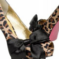

Fashion
Emeralds are one of the three main precious gemstones (along with rubies and sapphires) and are known for their fine green to bluish green colour. They have been treasured throughout history, and some historians report that the Egyptians mined emerald as early as 3500 BC.

SHOES
Jade is most commonly associated with the colour green but can come in a number of other colours, as well. Jade is closely linked to Asian culture, history, and tradition, and is sometimes referred to as the stone of heaven.